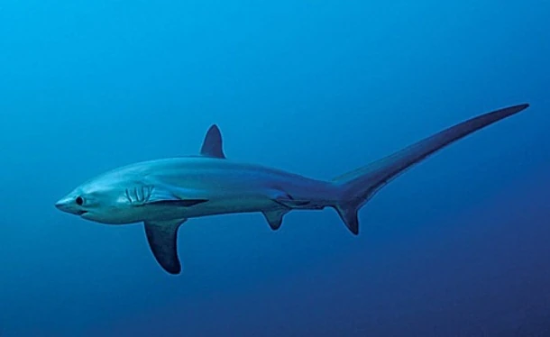
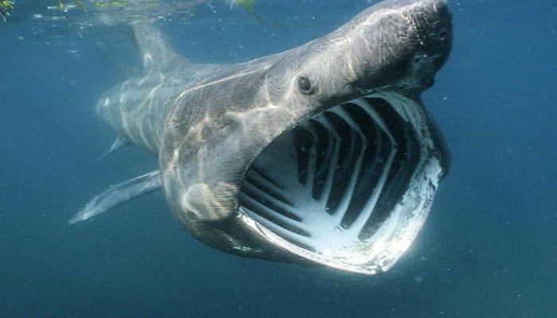
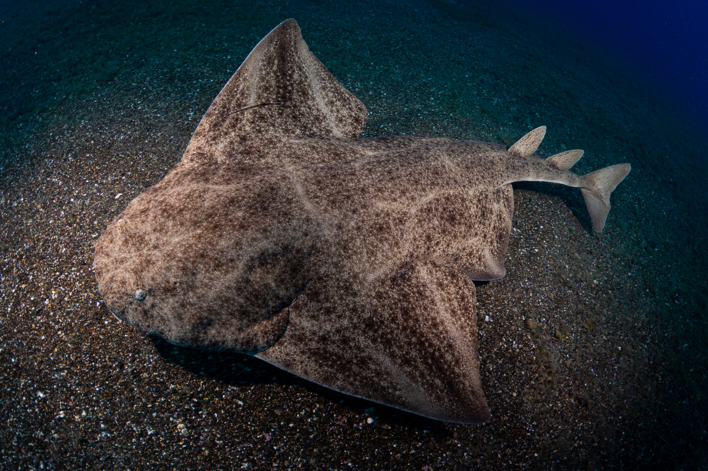
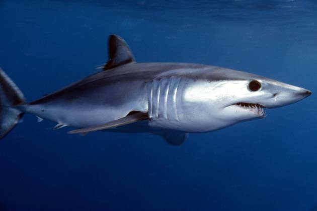
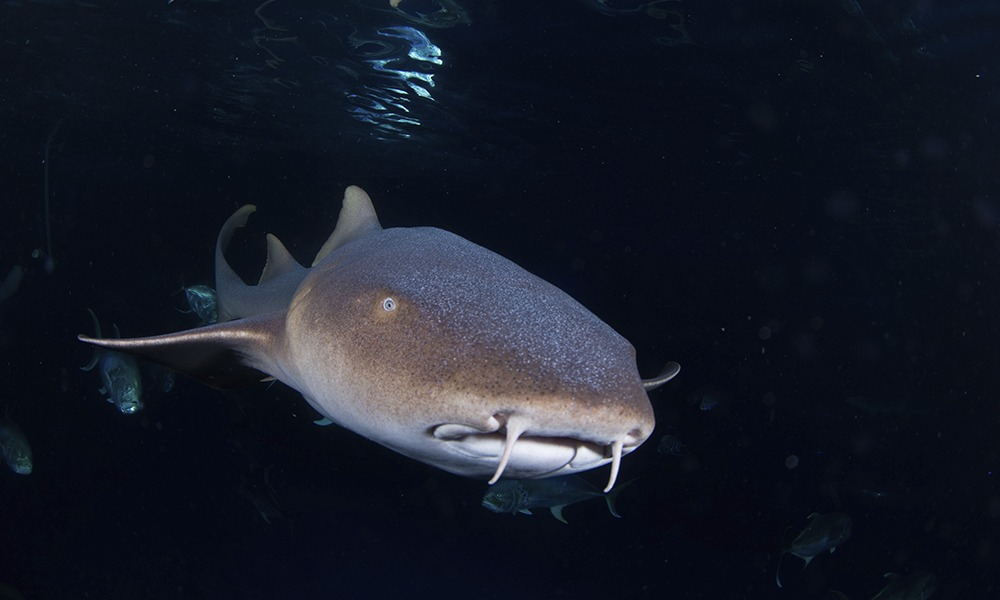
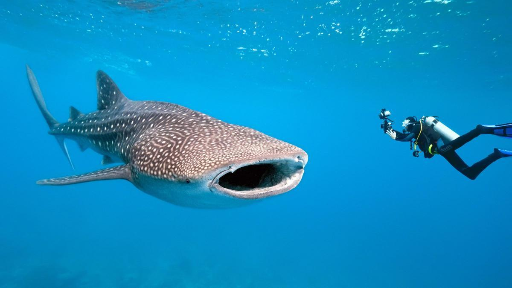
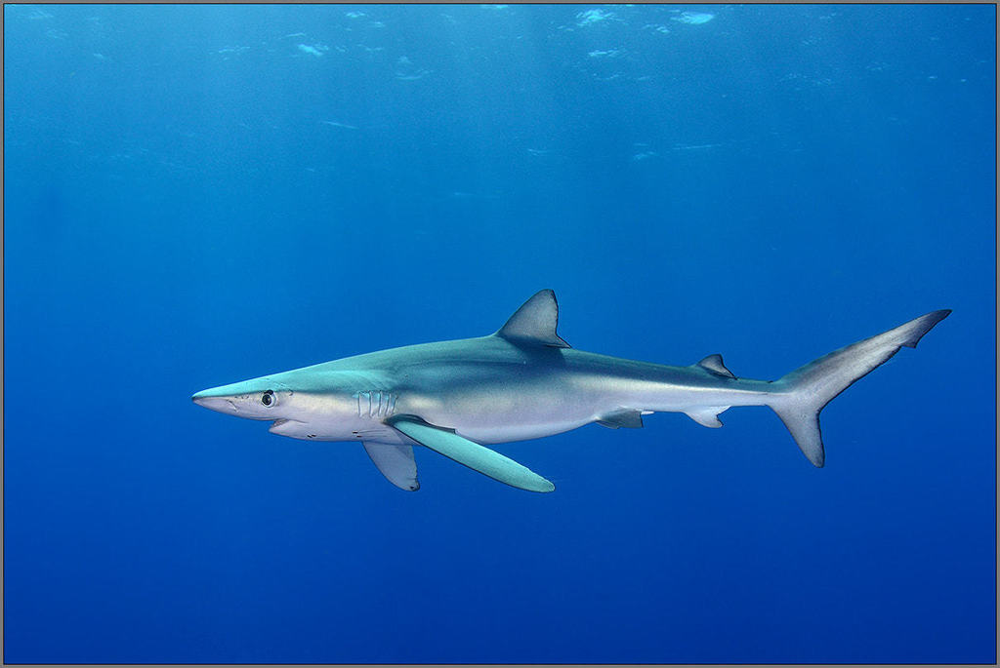
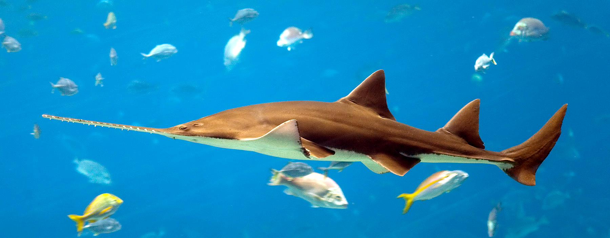

Top 10
.jpg)
Nombre: Tiburón martillo grande (Sphyrna lewini)
Hábitat: Aguas tropicales y templadas
Población: Decenas de miles (Aprox) a nivel global
Razones del peligro de extinción:
·Sobrepesca: Este tiburón es muy valorado en el mercado por su carne y sus aletas, lo que ha llevado a una disminución drástica en sus poblaciones.
·Captura incidental: A menudo queda atrapado en redes de pesca destinadas a otras especies, lo que contribuye a su declive.
·Destrucción de hábitat: La degradación de los ecosistemas costeros y los arrecifes, donde estos tiburones suelen vivir y reproducirse, afecta su supervivencia.
·Cambio climático: Las alteraciones en las temperaturas del océano y la acidificación afectan la disponibilidad de presas y su hábitat.
·Baja tasa de reproducción: Tienen un crecimiento lento y una reproducción limitada, lo que dificulta la recuperación de las poblaciones ya disminuidas.

Nombre: Tiburón oceánico de puntas blancas (Carcharhinus longimanus)
Hábitat: Aguas tropicales y templadas
Población: Decenas de miles a nivel global (Con un declibe de hasta un 98% de su población en algunas areas de su distribución), en comparación con poblaciones históricas.
Razones del peligro de extinción:
Sobrepesca comercial:
1· Pesca dirigida: Este tiburón es altamente valorado por sus grandes aletas, que son uno de los productos más demandados en el mercado de sopa de aleta de tiburón. Esto ha llevado a su pesca intensiva, especialmente en océanos abiertos.
2· Captura incidental: Es una de las especies más capturadas accidentalmente en pesquerías de palangre y redes de enmalle destinadas a otras especies como el atún y el pez espada.
·Tasas de reproducción bajas: Este tiburón tiene un ciclo reproductivo lento y da a luz a un número limitado de crías. Esto significa que las poblaciones no pueden recuperarse rápidamente frente a niveles de explotación altos.
·Pérdida de hábitat: Aunque es una especie pelágica que vive en aguas abiertas, el deterioro del ecosistema marino, como la contaminación y la destrucción de áreas clave para la alimentación y el apareamiento, afecta su supervivencia.
·Cambio climático: Los cambios en la temperatura del agua y las alteraciones en las corrientes marinas afectan su distribución y las cadenas alimenticias de las que depende. Esto puede dificultar su capacidad de encontrar alimento y hábitats adecuados.
·Falta de regulaciones internacionales: Aunque la especie está clasificada como "Vulnerable" en la Lista Roja de la UICN, su protección varía enormemente según la región. Muchas áreas de alta mar carecen de regulaciones efectivas contra la pesca excesiva o ilegal.

Nombre: Tiburón zorro (Alopias vulpinus)
Hábitat:Aguas pelágicas (mar abierto) y costeras de mares templados y tropicales
Población: De decenas a cientos de miles
En el Océano Atlántico y el Pacífico, las reducciones han alcanzado entre el 50% y el 83%, dependiendo del área. En el Mar Mediterráneo, la población ha disminuido más del 99%
Razones del peligro de extinción:
Sobrepesca y captura incidental:
1· Pesca dirigida: Sus largas aletas son muy valoradas en el mercado de sopa de aleta de tiburón, lo que lo convierte en objetivo directo de pesquerías en muchas partes del mundo.
2· Captura incidental: Con frecuencia queda atrapado en redes de pesca de arrastre, palangres y otras artes de pesca diseñadas para otras especies, especialmente en alta mar.
·Tasa de reproducción baja: Los tiburones zorro tienen una fecundidad muy baja, con camadas promedio de 2 a 4 crías después de largos períodos de gestación (hasta 9 meses en el caso de esta especie). Esto significa que su capacidad para recuperarse de las pérdidas poblacionales es extremadamente limitada.
·Degradación de hábitat: La degradación de los ecosistemas marinos, causada por actividades humanas como la contaminación y la destrucción de áreas críticas para su reproducción o alimentación, impacta negativamente en sus poblaciones.
·Cambio climático: Los cambios en la temperatura y las corrientes oceánicas afectan las cadenas alimenticias marinas y su distribución geográfica, lo que puede dificultar la búsqueda de presas y sus rutas migratorias.
·Falta de regulaciones efectivas: Aunque la especie está catalogada como "vulnerable" en la Lista Roja de la UICN, la implementación de regulaciones internacionales y locales para protegerla es insuficiente en muchas áreas. La pesca ilegal y no regulada también contribuye a su declive.

Nombre: Tiburón peregrino (Cetorhinus maximus)
Hábitat: Se encuentra en los océanos Atlántico, Pacífico e Índico. Prefiere zonas de mar abierto
Población: Alrededor de 18,200 especimenes
Razones del peligro de extinción:
Sobrepesca histórica y captura incidental:
1· El tiburón peregrino fue cazado intensamente en el pasado, especialmente por su aceite de hígado, utilizado en la industria. Aunque actualmente está protegido, la sobreexplotación histórica ha tenido un impacto duradero en sus poblaciones.
2· La captura incidental en redes de pesca destinadas a otras especies sigue siendo una amenaza. A pesar de estar en aguas frías y templadas, su tendencia a nadar cerca de la superficie lo hace vulnerable a la pesca comercial.
·Baja tasa de reproducción: Los tiburones peregrinos tienen una baja tasa de reproducción, con períodos largos de gestación (se estima que puede ser de hasta 3.5 años), lo que significa que sus poblaciones se recuperan lentamente. Además, las crías nacen en tamaños grandes (alrededor de 1.5 a 2 metros de largo), lo que dificulta aún más su capacidad para aumentar rápidamente su número.
·Pérdida de hábitat: Las actividades humanas como la contaminación marina, la destrucción de hábitats costeros y la alteración de los ecosistemas marinos pueden afectar las zonas donde estos tiburones se alimentan, especialmente en áreas de alta productividad de plancton, que es su principal fuente de alimento.
·Cambio climático: El cambio climático también afecta la distribución de las especies marinas y la abundancia de plancton, lo que podría alterar las rutas migratorias del tiburón peregrino y la disponibilidad de su alimento, lo que podría contribuir a una disminución en su población.
·Falta de monitoreo adecuado: Aunque hay más conciencia sobre la situación de los tiburones peregrinos, aún falta un monitoreo exhaustivo de sus poblaciones y la implementación de medidas de conservación eficaces en varias áreas donde habitan. Sin un seguimiento adecuado, es difícil tomar decisiones informadas sobre la conservación de esta especie.

Nombre: Tiburón ángel (Squatina squatina)
Hábitat: Fondos arenosos y fangosos
Población: Se encuentra catalogado como "en peligro crítico de extinción" y se estima que su población podría ser menos de 1,000 individuos
Razones del peligro de extinción:
·Sobrepesca y captura incidental: El tiburón ángel ha sido objeto de una intensa pesca comercial debido a su carne y aceite de hígado, que eran muy valorados en la industria. Aunque las regulaciones han mejorado, las capturas accidentales, o bycatch, siguen siendo una amenaza significativa, ya que esta especie es capturada en redes de pesca dirigidas a otras especies.
·Destrucción y degradación del hábitat: Los tiburones ángel habitan principalmente en fondos marinos arenosos y fangosos cerca de las costas. La degradación de estos hábitats, especialmente debido a la pesca de arrastre y contaminación marina, afecta gravemente su capacidad para sobrevivir. La alteración de su entorno natural reduce las áreas donde pueden cazar y reproducirse.
·Baja tasa de reproducción: El tiburón ángel tiene una baja tasa de reproducción. Su ciclo de vida es largo, y las crías nacen en tamaños grandes, lo que significa que tienen una tasa de crecimiento más lenta y que sus poblaciones se recuperan con dificultad. Esto hace que cualquier disminución de su población sea difícil de revertir rápidamente.
·Falta de protección efectiva en muchas áreas: Aunque hay esfuerzos de conservación en ciertas regiones, la falta de protección efectiva en muchas áreas donde vive el tiburón ángel sigue siendo un desafío. La falta de monitoreo constante y la escasa implementación de regulaciones pesqueras en algunas zonas aumentan el riesgo para la especie.

Nombre: Tiburón mako de aleta corta (Isurus oxyrinchus)
Hábitat: Océanos abiertos (pelágico), aguas templadas y tropicales
Población: A nivel mundial, algunas estimaciones sugieren que podrían quedar aproximadamente entre 300.000 y 500.000 individuos
Razones del peligro de extinción:
Sobrepesca Comercial:
1· Demanda de su carne y aletas: El tiburón mako es altamente valorado en el mercado por su carne y, especialmente, por sus aletas, que se utilizan para la sopa de aleta de tiburón. Esta práctica ha llevado a la sobreexplotación de la especie.
2· Pesca deportiva: Es uno de los tiburones más buscados por los pescadores deportivos debido a su velocidad y fuerza. Muchos tiburones capturados no son liberados o, si lo son, ya están gravemente heridos.
Captura Accidental (Bycatch):
1· El tiburón mako de aleta corta es capturado de forma incidental en pesquerías que buscan atún y pez espada. Como resultado, muchos mueren en las redes o anzuelos de palangre antes de ser liberados.
2· Debido a su alta movilidad y presencia en aguas donde se practica la pesca intensiva, sufre una alta tasa de mortalidad accidental.
Madurez Tardía y Baja Tasa de Reproducción
1· Los tiburones mako tardan mucho en alcanzar la madurez sexual (las hembras pueden tardar hasta 18 años y los machos alrededor de 8 años).
2· Tienen un bajo índice de reproducción, con camadas pequeñas (de 4 a 25 crías) y un largo período de gestación de 15 a 18 meses. Esto significa que sus poblaciones no pueden recuperarse rápidamente después de ser explotadas.
Destrucción del Hábitat y Cambio Climático
1· Destrucción del Hábitat y Cambio Climático: El cambio climático afecta a sus hábitats al alterar las temperaturas oceánicas y la disponibilidad de sus presas, lo que puede forzarlos a migrar a aguas menos seguras o donde la comida escasea.
2· La acidificación de los océanos también podría afectar su fisiología y la de sus presas, lo que afecta indirectamente su supervivencia.
Falta de Regulaciones y Cumplimiento
1· En muchas regiones, no hay regulaciones suficientes para proteger al tiburón mako. Incluso donde existen, el cumplimiento es deficiente.
2· Aunque se han propuesto prohibiciones de pesca en ciertas áreas, la aplicación de estas regulaciones es inconsistente y la falta de monitoreo facilita la pesca ilegal.
Poca Conciencia y Educación
1· A pesar de su estado crítico, la mayoría de las personas no son conscientes de que el tiburón mako está en peligro de extinción.
2· La educación y sensibilización sobre la importancia de los tiburones en los ecosistemas marinos es insuficiente, lo que reduce el apoyo público para su conservación.

Nombre: Tiburón nodriza caribeño (Ginglymostoma cirratum)
Hábitat: Zonas poco profundas, Fondos arenosos y rocosos, y Áreas protegidas (cuevas, grietas rocosas, y estructuras submarinas)
Población: Se estima que quedan entre 10,000 y 20,000 individuos en el mundo
Razones del peligro de extinción:
Sobrepesca y captura incidental:
1· Aunque no es un objetivo frecuente de la pesca comercial, el tiburón nodriza es capturado accidentalmente en redes y líneas de pesca (captura incidental).
2· En algunas regiones, se le pesca de forma dirigida por su carne, piel y aletas (utilizadas en la sopa de aleta de tiburón).
3· La pesca deportiva también contribuye a su declive, ya que son tiburones relativamente fáciles de atrapar debido a su naturaleza sedentaria.
Degradación y destrucción del hábitat
1· El tiburón nodriza caribeño depende de arrecifes de coral, lechos de pastos marinos, manglares y áreas costeras para alimentarse y refugiarse.
2· La contaminación, el cambio climático y la actividad humana están degradando estos ecosistemas. La blanqueación de los corales y la destrucción de manglares reducen sus áreas de caza y descanso.
3· El desarrollo costero, la construcción de puertos y la agricultura intensiva provocan sedimentación y contaminación, afectando negativamente sus hábitats.
Lenta tasa de reproducción
1· Los tiburones nodriza tienen un ciclo de vida largo, alcanzando la madurez sexual entre los 15 y 20 años y viviendo más de 20 años.
2· Las hembras tienen un bajo número de crías (generalmente de 20 a 30 crías por camada) y no se reproducen todos los años. Esto hace que la población se recupere muy lentamente si disminuye.
Turismo y actividades recreativas
1· El tiburón nodriza es una especie curiosa y dócil, lo que lo convierte en un objetivo para el turismo de buceo.
2· En algunas áreas, el contacto constante con humanos, como la alimentación por parte de los buceadores, puede alterar su comportamiento natural y hacerlos más vulnerables a los depredadores y a la pesca.
Cambio climático
1· El aumento de la temperatura del agua afecta la disponibilidad de presas y puede desplazar a los tiburones de sus áreas habituales.
2· El cambio climático también agrava fenómenos como la acidificación del océano, que impacta la salud de los arrecifes de coral, un hábitat clave para esta especie.
Poca percepción de amenaza y protección limitada
1· A pesar de su estado vulnerable, no existe un marco de protección global uniforme para esta especie.
2· En algunas áreas, carece de protección legal efectiva, lo que permite la pesca y la alteración de sus hábitats.

Nombre: Tiburón ballena (Rhincodon typus)
Hábitat: Aguas abiertas y zonas costeras
Población: Entre 7.000 y 10.000 individuos en todo el mundo
Razones del peligro de extinción:
Pesca comercial y captura incidental:
1· Aunque en muchos países el tiburón ballena está protegido, sigue siendo capturado ilegalmente en algunas áreas por su carne, aletas y aceite de hígado, que son comercializados en mercados internacionales.
2· Con frecuencia, estos tiburones también son víctimas de la captura incidental en redes de pesca dirigidas a otras especies, lo que resulta en lesiones o la muerte de muchos individuos.
Colisiones con embarcaciones:
1· Debido a que los tiburones ballena suelen nadar y alimentarse cerca de la superficie, son vulnerables a colisiones con barcos, especialmente en áreas con mucho tráfico marítimo, como en las costas de países tropicales y subtropicales.
2· Estas colisiones pueden causar heridas graves o la muerte y representan una amenaza importante para las poblaciones de tiburones ballena, en particular en áreas donde no se controlan las rutas de embarcaciones.
Degradación del hábitat y contaminación
1· La contaminación marina y la acumulación de microplásticos en los océanos afectan la salud del tiburón ballena y su hábitat, ya que pueden ingerir desechos plásticos mientras se alimentan de plancton.
2· La contaminación química de las aguas, incluyendo pesticidas y otros compuestos industriales, afecta las cadenas alimentarias marinas y, por ende, la disponibilidad de presas de los tiburones ballena.
Cambio climático y disminución de alimentos
1· El cambio climático está alterando las temperaturas del océano y afectando la distribución de plancton, que es la base de la dieta de los tiburones ballena. La menor disponibilidad de alimento en algunas regiones obliga a los tiburones a viajar distancias mayores en busca de zonas ricas en plancton.
2· Los cambios en las corrientes oceánicas, que distribuyen el plancton y otros nutrientes, pueden también afectar la distribución geográfica de las áreas de alimentación de los tiburones ballena, dificultando sus patrones de migración y alimentación.
Lenta tasa de reproducción
1· Los tiburones ballena tienen una madurez sexual tardía, alcanzándola entre los 25 y 30 años de edad, y no tienen camadas frecuentes ni numerosas. Esta baja tasa de reproducción significa que las poblaciones no se recuperan rápidamente si se ven reducidas.
2· Además, debido a la falta de estudios completos, se desconoce mucho sobre sus patrones de reproducción, lo que complica la implementación de programas de conservación específicos.
Turismo no regulado
1· En algunas áreas donde el tiburón ballena es una atracción para el turismo de buceo y avistamiento, la presión turística sin regulación adecuada puede causar estrés en los animales y alterar su comportamiento natural.
2· La interacción con embarcaciones y buceadores, en ocasiones, puede llevar a lesiones accidentales y a la alteración de sus patrones de alimentación y migración.

Nombre: Tiburón azul (Prionace glauca)
Hábitat: Zonas oceánicas abiertas
Población: Su población mundial se estima que podría estar en el rango de los 10 a 20 millones de individuos
Razones del peligro de extinción:
Pesca comercial:
1· El tiburón azul es capturado activamente en pesquerías comerciales debido a su carne, piel y aletas. Su carne es apreciada en algunos mercados, mientras que sus aletas son utilizadas en la industria de la sopa de aleta de tiburón, una práctica que ha reducido significativamente las poblaciones de tiburones en varias partes del mundo.
2· Además, su piel se usa para productos de cuero, y su hígado se extrae por su aceite.
Captura incidental (bycatch):
1· El tiburón azul es frecuentemente capturado de manera incidental en las redes de pesca destinadas a otras especies, como en las pesquerías de atún o de peces de agua profunda. Esto puede resultar en la muerte o lesiones de tiburones azules no intencionales.
2· La pesca de arrastre y las líneas de largo alcance son especialmente problemáticas, ya que estas técnicas afectan a grandes áreas y a muchas especies marinas, incluido el tiburón azul.
Degradación del hábitat
1· La contaminación marina es otra amenaza significativa para el tiburón azul. Los productos químicos tóxicos como pesticidas, metales pesados y plásticos que contaminan el agua pueden dañar tanto al tiburón como a su entorno, afectando su salud y el equilibrio de sus hábitats.
2· El cambio climático también impacta su hábitat, ya que el aumento de la temperatura del agua puede alterar la distribución de presas (como el plancton y pequeños peces), lo que afecta las zonas de alimentación del tiburón azul. Además, las alteraciones en las corrientes oceánicas pueden afectar sus migraciones y la disponibilidad de alimentos.
Alta vulnerabilidad por su biología
1· El tiburón azul tiene una tasa de reproducción baja en comparación con otras especies de tiburones. Las hembras maduran sexualmente a los 4-5 años de edad y pueden tener entre 4 y 25 crías por camada, pero esto no es suficiente para mantener grandes poblaciones frente a la presión de la pesca y la captura incidental.
2· Su largo ciclo de vida y su baja tasa de reproducción lo hacen más vulnerable a las presiones de explotación, ya que las poblaciones no se recuperan rápidamente.
Destrucción de zonas de cría
1· Aunque los tiburones azules no tienen áreas de cría específicas, su preferencia por ciertas zonas costeras y la proximidad a las costas en su etapa juvenil pueden ponerlos en riesgo si estas áreas son modificadas o destruidas por actividades humanas, como la construcción de puertos o el dragado de costas.
Competencia y depredación
1· Aunque no es una amenaza directa inmediata, la competencia con otras especies y la presencia de depredadores naturales (como otros tiburones y mamíferos marinos) también pueden influir en las poblaciones de tiburón azul.

Nombre: Tiburón sierra (Pristidae)
Hábitat: Zonas costeras y estuarios
Población: Se estima que, en general, la población de tiburones sierra en todo el mundo podría ser de menos de 1,000 individuos en total
Razones del peligro de extinción:
Pesca comercial e ilegal:
1· Pesca dirigida: Los tiburones sierra son cazados por su carne, aletas y piel. A pesar de que muchos países han implementado leyes para protegerlos, la pesca ilegal sigue siendo un problema en algunas regiones.
2· Pesca incidental (bycatch): Además de ser objetivos de pesca directa, los tiburones sierra son capturados accidentalmente en redes y equipos de pesca destinados a otras especies, como el atún o los camarones. Esto aumenta el riesgo de mortalidad en las poblaciones.
Destrucción de hábitats
1· Los tiburones sierra dependen de hábitats costeros y estuarinos para alimentarse y reproducirse, zonas que son extremadamente vulnerables a las actividades humanas. La destrucción de estos hábitats debido a la urbanización costera, la contaminación, y las actividades portuarias afecta negativamente a las poblaciones.
2· La deforestación de manglares y la destrucción de praderas de pastos marinos, ecosistemas que sirven como refugios y fuentes de alimento, también contribuyen a la pérdida de hábitats adecuados para los tiburones sierra.
Contaminación marina
1· La contaminación por plásticos y otros desechos marinos afecta a los ecosistemas costeros y puede alterar la salud de las especies marinas, incluidos los tiburones sierra. Además, el vertido de productos químicos tóxicos como pesticidas y metales pesados puede afectar tanto a los tiburones como a sus presas.
2· El cambio climático también está contribuyendo al calentamiento de las aguas, lo que puede afectar los hábitats tradicionales de los tiburones sierra, como las zonas de baja salinidad donde suelen habitar.
Baja tasa de reproducción
1· Los tiburones sierra tienen una tasa de reproducción baja, lo que significa que sus poblaciones no se recuperan rápidamente una vez que han sido reducidas. Además, sus zonas de cría están siendo destruidas o degradadas, lo que afecta aún más su capacidad para reproducirse.
2· La especie también tiene un largo ciclo de vida y un ritmo de madurez sexual lento, lo que hace que sea aún más vulnerable a las presiones de explotación.
Cambios en la disponibilidad de alimentos
1· Los tiburones sierra se alimentan principalmente de peces pequeños, crustáceos y moluscos. La sobrepesca de estas especies de presas reduce la disponibilidad de alimentos para los tiburones sierra, lo que afecta su supervivencia.
2· El cambio climático también está alterando las distribuciones de presas y las temperaturas del agua, lo que afecta a los tiburones sierra que dependen de ambientes específicos para encontrar su alimento.
Vulnerabilidad a la captura y la caza debido a su tamaño
1· Los tiburones sierra pueden ser más fácilmente capturados debido a su gran tamaño y a su presencia en zonas costeras donde los humanos realizan actividades de pesca. Su carácter elusivo y comportamiento tranquilo también los hace más susceptibles a ser atrapados en redes y otros equipos de pesca.